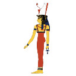
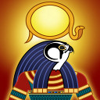

See individual pages for description sources
Click on any picture to view more information
Amun was the most important god in the middle and old kingdom. He replaced Ra, (although they eventually combined into Amun-Ra), as the creator god during those periods of time. He started to rise into prominence during the first intermediate period. The idea of Amun-Ra became a popular idea during much of the Middle Kingdom. During this same time Amun combined with many other gods, which in turn caused him to seemingly become the sole god...
Amun-Ra

Amun-Ra was the king of the gods in Egypt’s later time period. He completed all of the roles of Ra, but gained a stronger support from Egyptians. His worship became so important that other gods started to be worshipped as different versions of Amun-Ra. At some times, he was the only god in the pantheon with all the other gods being only different appearances or aspects of Amun-Ra. While other gods such as Ra, Amun and Atum always struggled in Egypt’s religion for supremacy, Amun-Ra locked in as a supreme god.
Anput

Reshep was a god worshipped around about the eighteenth dynasty. He provided protection against plague and war. Was also thought to have been able to repel the demon Akha, who caused stomach pains. Amenhotep II had a stelae created near the Sphinx at Giza, showing Reshep, and Astarte watching over Amenhotep preparing his horses for war. He is often considered to be the husband of Qetesh, and father of min. He is also described as husband.
Anubis was a god of funerals and death. He was portrayed as a man with the head of a jackal. Throughout history, he was the god who was in charge of of funerals and funeral rituals as well as praying for the dead while Osiris was the god who dealt with the dead once they were in the underworld. Because of this, Anubis was said to be the start of many funeral practises such as embalming. This was until the cult of Osiris became popular and Osiris became the dominant god of death. He was said to have embalmed...
Anuket

Anuket is the goddess of the nile river. She has two very similar titles, “the embracer” and “the Lady of Embracing”. These titles are associated with her because, in one area of the nile there are two tributaries, (which are two small rivers, that feed into a larger body of water), which are said to be her out stretched arms. By the New Kingdom, her name “the embracer” came to symbolize conception, so she also came to represent fertility. The Greeks believed her to be similar to Hestia, because if her avowed virginity, and they...
Apep

Apep, or apophis is the demon of chaos, and the ultimate foe of Ra. He was said to have represented all that was outside of the ordered world. In other words he was responsible for all the chaos that occurs in the world. Although there were many different forms of snakes, which had certain meanings like royalty, or divinity, Apophis did not represent any of these qualities. It was said that he would encounter Ra every night, and attempt to stop him from passing through the underworld...
Apis bulls was considered to be manifestations of Osiris and Ptah themselves. Only one Apis bull could exist at a time and when the current one died, the Egyptians would go looking for another one and bring it back to Memphis as the new Apis bull. When a new bull was found, it was lead through the streets in celebration for seven days...
Aten

Aten was the disk of the sun. Amenhotep IV praised Aten as the creator, giver of life, and nurturing spirit of the world. Was worshipped as early as the old kingdom, but was installed as the primary god by the pharaoh Akhenaten. Worship of the traditional gods was rejected. Aten was worshipped outside in the sunlight, instead of in temples. Some hymns towards Aten describe how it is the absolute ruler of all things. Aten was not as open...
Atum is one of the oldest gods from ancient Egypt. He is one of the nine main gods from his time period of the Old Kingdom. He is thought to have been one of the creator gods, alongside Ra, Horakhty, and Khepri. His name translates to “the accomplished one”, but it is also thought that his name could mean “the one who did not come to being yet”, which is much more negative than the first translation. It is thought that he gave birth to the genders of the gods, through his semen. Another interpretation says that he...
Babi

Babi was the underworld baboon deity, considered god of virility of the dead, also known as Baba, “master of darkness”, and “Alpha male of the baboons”. Babi was worshiped in a mix of fear, respect, hope, and awe. His job was to devour souls of the unrighteous. Controlled darkness and his erect penis could open heavens doors. Men would pray to Babi in hopes to improve their sexual abilities. He is usually represented with an...
Bastet is generally thought of as a cat goddess, but originally had the head of a lion or a desert sand cat. The new kingdom is when she was commonly associated with the domesticated cat. She was worshipped all over lower Egypt. Bastet is often shown holding the ankh and is often accompanied by a litter of kittens. During the old kingdom she was considered to be the daughter of Atum, but she was generally thought to be a daughter of Ra. She was also the wife of Ptah and mother of Nefertum and Maahes.
Bes

Bes was a dwarf god who was used in things like pottery. He was used to inspire joy or drive away sorrow. It is thought that he may have scared away evil spirits with his hideousness. He was worshipped as the god of many things. Sometimes he was worshipped as a god of war, sometimes as a god of childbirth, and other times as god of sexuality/humour/dancing/music. On top of all of that, he started out as a protector of the Pharaoh...
Geb was the god of the earth. He was the partner and brother of Nut and is the father of Set god of storms, Nephthys goddess of nightmares, Osiris god of death and Isis goddess of marriage. In mythology, he is not the first pharoah (Atum is), but he is the one that the pharaohs claimed to be descendents of. When Geb and his sister Nut were born, they fell in love. Geb and Nut were said to be in an eternal embrace. Their grandfather did not like this and ordered their father, Shu (the sky) to forever hold them apart...
Hathor was originally a personification of the milky way, but as time passed she took on many attributes of the other goddesses. She was a goddess of beauty and patron of cosmetic arts. She was seen as the embodiment of joy, love, romance, perfume, dance, music, and alcohol. She took the form of many things, such as a cat, a woman, a goose, and a lion.
Horus was one of the most popular gods in Egypt. He was the god of the sky and pharaohs. He was portrayed as a man with the head of a falcon. While other more important gods (Atum, Aten, Ra, etc) were often more important in their particular time, they were not always recognized by other time periods or areas of Egypt. Horus was an important god who was recognized almost universally in Egypt as well as having many local versions. When Set killed Horus’s father Osiris, Horus and Set fought over the throne of Egypt...
Isis

Isis is the goddess of health and marriage. She was the sister and wife of the afterlife god Osiris. She had 2 children: Horus with Osiris and Sekhmet with Ra. Isis was the ideal mother and was worshipped by both slaves and wealthy aristocrats. Isis was instrumental in the resurrection of her brother Osiris when he was brutally murdered by their jealous brother Set. With Nephthys help, Isis was able to resurrect Osiris using her magical skills. Isis was said to be the mother to all pharaohs.
Kebechet

Kebechet is the goddess of freshness she is the daughter of Anubis and his consort Anput. Kebechet is thought to help her father Anubis in his role of the god of embalming, Kebechet is pictured as a snake and sometimes with a body of stars but other sources state that she is depicted as a women with the head of a snake. From time to time Kebechet takes the form of an ostrich which links her to the goddess of Ma’at who is represented justice and balance and the judgement of the dead.
Khepri was the god of the rising sun, often considered an aspect of Ra. His job was to push the sun across the sky and is portrayed as having the head of a scarab beetle or just a scarab beetle. Worship of the scarab beetle far predated Ra and Jewelry and charms based on scarab beetles were very popular. This tradition survived long enough to influence even Roman soldiers. Khepri was usually considered to be self-created, but he was sometimes said to be a child of one of the original gods (see the tree of the gods)...
Khnum

Khnum was the god of fertility, and procreation. He was shown to be represented with water, and was worshipped from the first dynasty into the early common era. He was depicted as being a man with a ram head, which had twisted horns. It was thought that he had created man from clay, and formed every human on his potter’s wheel. There are several instances where a large cult following was centred around Khnum, the first was at Hewer, during the Middle Kingdom...
Maashes

Maashes was the ancient Egyptian lion-god of war. Both a god of war and a guardian and a lord of the horizon. Maashes was usually depicted as a lion-headed man carrying a knife or a sword, Maashes sometimes wore the atef crown or the solar disk and uraeus on his head. Occasionally he was portrayed as a lion devouring a captive. He was believed to help Ra fight against Apep in the solar barque each night, a god who protected the pharaoh while he was in battle...
Maat was a goddess who represented truth, justice, balance, and morality. She was the daughter of Ra and wife of Thoth. She is earliest mentioned in the Old kingdom. She later came to represent balance and order. She is usually depicted as a woman with outstretched wings. Other depictions of her have her holding a scepter in one hand and an ankh in the other. She was frequently associated with an ostrich feather, which she almost always was depicted with in her hair.
Mehet-Weret

Mehet-Weret is thought to have been the goddess of streaming water, she is also credited with creation and rebirth. Her name translates to “Great flood” or “Great Tide”, these names links her with Nu, and it’s waters of chaos. It is said in The Book of the Dead, that Mehet-Weret gave birth to Ra. She is depicted as a woman with the head of a cow, or a cow laying on a mat which is made from reeds. She is normally depicted as wearing the sun disk headdress...
Mut
Mut was a sky goddess, who came into prominence during the 18th dynasty. She is represented in hieroglyphs by a lion’s head, or a woman who has a lion’s head. Her names translates to “mother”, she was a considerably older god, in terms of depiction, then other gods. She was associated with Uraeus, the rearing cobra, lions as stated previously, and royal crowns. She was shown wearing two crowns, one from Southern Egypt, and one from Northern Egypt...
Nefertum

Nefertem was an ancient sun-god of Lower Egypt and in art, Nefertem was usually portrayed as a man wearing the lotus and two feathers on his head, sometimes this elaborate headdress also included two menet necklaces. Occasionally, Nefertem was also shown as a lion-headed man.. He was important to various creation myths. Nefertem was associated with the young boy (Atum) who emerged from the lotus of Nun at the beginning of time. It was this boy that shed the tears from which all of mankind emerged...
Neith was the goddess of war, hunting, weaving and wisdom. She is one of the oldest gods on record, because she was worshipped since the predynastic period (around 3000 BCE). There were several queens throughout the first dynasty, who were named after Neith. She was made the patroness of the city of Sais, which was located in the river delta, which was where the nile branched off into several different rivers before joining the Mediterranean Sea...
Nekhbet was originally a local god from Nekheb but joined the general Egyptian pantheon and became a symbol of Upper Egypt. Wadjet was the symbol of Lower Egypt. Nekhbet appeared as a vulture, often with a human head. She was said to protect the divine family (the Pharaoh's family), although was sometimes mentioned in respect to other important people...
Nephthys

Nephthys was the sister and wife of Set and was the daughter of Geb and Nut. Osiris and Isis were also her brother and sister and Anubis was her son. She is usually connected to funerals or the household. She had her son with Osiris through trickery and she helped Isis on her quest to resurrect Osiris. Nephthys was an odd goddess because she was in such a central role in the family tree and with the other main gods but she herself does not have a defined realm to rule over...
Nu

Nu has no gender which he is at all time. It has two different forms which it can take with Nu being the male version, and Nunet being the female version. He is thought to have been the “waters of chaos”. It is said that Nun was the first god, and that four gods lived inside of his waters of chaos, four frog gods who were male, and four snake goddesses who were female. They together formed the first land mass. Nu is portrayed as a frog headed man with blue skin, or a snake headed woman with blue skin...
Nut

Nut was the goddess of the sky and the stars. Her partner and brother was Geb, the god of earth and the ancestor of the Pharaohs. Her children include Set god of storms, Nephthys goddess of nightmares, Osiris god of death and Isis goddess of marriage. 1 When Nut and her brother Geb were born, they fell in love. Geb and Nut were said to be in an eternal embrace. Their grandfather did not like this and ordered their father, Shu (the sky) to forever hold them apart (earth and sky). Despite this, they still had their children...
Osiris was the god of death, the afterlife and resurrection. His parents were Geb and his partner is his sister Isis. He has two sons: Anubis with Nephthys and Horus with Isis. He is portrayed with green skin due to his resurrection. His job is to weight the heart of those who are travelling through the afterlife against the feather of truth. If the heart proves to be heavier, the person has sinned and is punished. In most accounts, their heart is eaten by a crocodile god and they ceased to exist. His story was that he...
Ptah was the chief god of the ancient city of Memphis and was a creator god who brought all things to being by thinking of them with his mind and saying their names with his tongue. Ptah was unique amongst Egyptian creation gods in that his methods were intellectual, rather than physical. According to the priests of Memphis, everything is the work of Ptah's heart and tongue: gods are born, towns are founded, and order is maintained. Ptah was also the patron god of skilled craftsmen and architects...
Qetesh was the goddess of nature, beauty and sexual pleasure. She was a Semitic deity whose worship was brought to Egypt. Her husband was often the god Reshep, a Semitic deity, but when she was brought to Egypt, she was sometimes associated with the fertility god Min. Min, Reshep, and Qadesh were worshipped as a triad where Qadesh is a wife to both, or wife of Reshep and mother of Min. She was originally depicted naked on the back of a lion, with a crescent moon on her head. After Qetesh’s adoption...
Ra
Ra is thought to be the god of the sun, and the creator of all life. This concept evolved into a mainstream conscious thought near the fall and after the fall of the Old Kingdom (2686-2181 BCE). It was thought that Ra would rise every morning and ride across the sky in his great bark. He would then descend into the underworld to battle Apophis, the demon of chaos, in order for to return back to the sky. In other words he would have to defeat Apophis in order for the sun to rise again. Ra was thought to be the sun itself...
Reshep was a god worshipped around about the eighteenth dynasty. He provided protection against plague and war. Was also thought to have been able to repel the demon Akha, who caused stomach pains. Amenhotep II had a stelae created near the Sphinx at Giza, showing Reshep, and Astarte watching over Amenhotep preparing his horses for war. He is often considered to be the husband of Qetesh, and father of min. He is also described as husband...
Satet

Satet was the goddess of floods and her name translates “She who shoots forth”, possibly referring the annual flooding of the rivers. Her cult originated in the city of Swenet, which is located near the modern city of Aswān. She was also originally thought to have been a goddess of war, hunting and fertility, and she is also thought to have been the mother of Anuket. She had another name which was translated to “She who runs like an arrow”...
Sekhmet

Sekhmet is the goddess of war and destruction and she was the sister and wife of Ptah. She is generally portrayed as a woman with the head of a lioness surmounted by the solar disk and the uraeus. She was identified with the goddess Bastet, and they were called the Goddesses of the West (Sekhmet) and the East (Bastet). Both were shown with the heads of lionesses although Bastet was said to wear green, while Sekhmet wore red. The name "Sekhmet" comes from the root sekhem which means "to be strong...
Serket

Serket is a benevolent scorpion goddess according to the Pyramid Texts she was the mother of Nehebkau, the snake god who protected the pharaoh from snakebites. She was closely associated with Isis and her sister Nephthys because of her connection with magic and the underworld. In Edfu she was said to be the wife of Horus and the mother of Horakhty (Horus of the Horizon) and was viewed as a protective goddess but she also had a darker side. Serket was also thought to have power over venomous snakes and...
Seshat was an ancient goddess of writing and measurement. She was portrayed as a woman wearing a dress and the priestly leopard skin. In her hands she holds the notched palm branch or the scribe's pen and palette. On her head she wears her headdress which resembles a star or flower atop a pole or a bow.. She was also the patroness of mathematics, architecture and record-keeping. Though she shared these duties with her husband, Thoth, Seshat was primarily a royal goddess...
Set is the god of the desert. He is also often associated with war and chaos. He is depicted as some strange animal that most agree is probably made up. This made up animal has been called the Sha but the most common idea of what animal it could have been based on is the pig. He was the son of Nut and Geb and his siblings were Osiris, Isis and Nephthys. His wife was Nephthys but he was described as being an unfaithful husband and they never had any children...
Shu is the god of air. He is the partner of Tefnut and the father of Geb and Nut, the sky and earth gods. He is often considered more lawful that Tefnut, who is often connected to vengeance. One popular myth of creation was that when Tefnut and Shu were born, they went into the world. Shu gave the world life while Tefnut gave the world order. However, their father Amun was still in the chaos and worried over where his children had gone. When they returned, Amun shed tears of joy and when these tears touched the ground...
Sobek was the god of crocodiles. He filled many other roles, but the only role that was consistent was the god of crocodiles. Other roles included god of the army, the nile and fertility. He started out as a dark god who the Egyptians thought had to be appeased, but they changed to thinking of him as a protective god, similar to Taweret. Both are also related to dangerous animals, but only if you get close.
Sons of Horus

Qebehsenuef was one of the four sons of Horus born of Isis and was portrayed as a mummified falcon. The other three sons of Horus were Imsety,Hapy and Duamutef. They were born from a lotus flower and were solar gods associated with the creation. They were retrieved from the waters of Nun by Sobek on the orders of Re (Ra). It was believed that Anubis gave the four sons the funerary duties of mummification, the Opening of the Mouth, the burial of Osiris and all men. Horus later made them protectors of the...
Taweret

Taweret was a god of fertility and childbirth. She was portrayed as having the head of a hippopotamus, the tail of a crocodile, and the claws of a lion. She was usually standing upright. Similar to Bes, she was considered to be a demon who fought against evil as well as being a god of things to do with nurturing and protecting. At first, however, she was seen as an evil force connected with apep, but quickly became a protective god, only being aggressive to protect others (similar to hippos protecting their young).
Tefnut is the goddess of moisture and rain. She is the partner of Shu and the mother of Geb and Nut, the sky and earth gods. Her main symbol is a lioness and often wears the head of a lion but also wears a sun disk on her head. She was often regarded as a spiteful god and her role in the emotional realm was often that of vengeance. Particularly turning sorrow into vengence. One popular myth of creation was that when Tefnut and Shu were born, they went into the world. Shu gave the world life while Tefnut gave...
Thoth

Thoth is the god of wisdom and learning. He was said to be self-created in the beginning along with his consort, the goddess Ma'at (truth). The two produced eight children, the most important being Amon. Alternately depicted as an ibis-headed human, an ibis, or a baboon (or dog-headed ape), perhaps because the grave facial expressions of these creatures suggested thoughtfulness. He carries a pen and scrolls with which he records all things. Thoth was believed to have filled many roles in the world of the gods...
Wadjet started as a local god from early Egyptian times but became a symbol of Lower Egypt. She appears as a serpent, sometimes with a human head. She is said to have created the first papyrus plant. Her name is also spelled with a papyrus plant and she is a symbol for ancient egypt which is the land of the papyrus plant. Wedjet also plays the role representing justice. When Geb went to take his fatherś throne unlawfully, Wedjet...